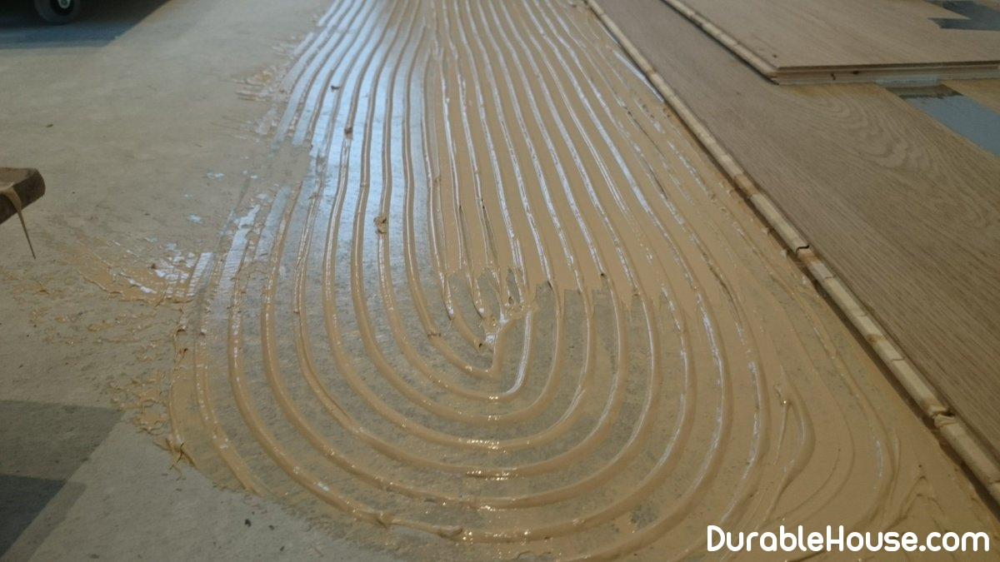

Parquet glue choice
First it is necessary to tell, than in general parquet glues differ from all others.
At first , availability of fillers that provide No shrinkage of the glued joint after rejection.
Secondly , parquet glue should not contain water, otherwise Humidity jump at rejection will lead to a significant deterioration in the laying quality, since The flooring is afraid of water.
Thirdly , parquet glue should be elastic, or Plastic-deformable, because it glues the hard foundation and "mobile" wood. Parquet Constantly expanding and narrowing with fluctuations in humidity, and the expansion of wood, though Almost imperceptible to the eye, but capable of destroying any rigid attachment.
Criterias of choice
The market of parquet adhesives represents a very wide choice. Virtually all manufacturers can Boast that their glues correspond to EN, or DIN, and for the layman they Will differ only in price. However, it should be understood that most of the standards It was created 15-20 years ago and does not take into account the level of modern production of parquet, nor A qualitative jump in new adhesive materials.
Therefore, if you are faced with the choice of parquet glue, we suggest you get acquainted with Evolution of parquet glues. This is perhaps the easiest way to understand what a Present glues present on the market.
Evolution in detail
Originally for glutinous installation of parquet, mastics were used on the basis of Bitumen, or as a melt, or in a mixture with a solvent. Rejection occurred either for Account for changing the aggregate state (solidification), or by evaporation of solvents. Low strength and inconvenience in work led to the disappearance of these adhesives in the middle of the past Century, although in the spaces of the Soviet Union these glues were used up to the 80's.
The mastics were replaced by parquet adhesives on Artificial resins on organic solvents . Rejection occurs due to Evaporation of the solvent. These adhesives form a sufficiently strong connection, but the glue seam with Time is embrittled, which causes a decrease in longevity. These glues reached their peak in 90's, but the struggle for ecology in developed countries made them unattractive. To less than Developed countries, solvent adhesives are still popular because of the cheapness.
The wide development of materials based on polyurethanes contributed to the development of glutinous systems. Developed at the end of the last century two-component polyurethane adhesives Are still relevant. The rejection occurs due to the reaction of the polyol and the isocyanate. Durable, Form a durable, plastically deformed seam, after mixing the components environmentally Are safe. Of the minuses only one - require the high professionalism of the handler. It's connected With the fact that the glue needs to be mixed correctly, quickly develop and prevent the glue from entering The face of the parquet.
And finally, the top of the evolution of parquet glues to date - silane-modified
Polyurethane one-component adhesive . The rejection reaction of this adhesive triggers
Water, and for complete curing there is enough moisture contained in the materials to be bonded
And in the air. This parquet glue has the highest durability - more than 40 years.
Forms an elastic glue seam - the optimal connection between the wood and the hard base.
Provides high quality of parquet installation due to the convenience in work - it is immediately ready for
Work, the rejection reaction goes only in the open glue, the glue closed in the can
Use as needed, and if accidentally hit the front layer of parquet
Is removed without a trace. At the same time the silane-modified glue has no smell and
Is the most environmentally friendly of existing parquet adhesives.
Based on
The above material can be divided into three groups of parquet adhesives that have sufficient
Consumer potential and optimal for the corresponding budget:
- Premium. Highest level of quality, ecological purity and durability (40 years) - Parquet Glue anhydrous one-component elastic based on silane-modified Polyurethane
- Basic. High level of quality, ecological purity and Durability (30 years) - Parquet adhesive, anhydrous, two-component Hard-elastic, based on polyurethane
- Budget. Satisfactory level of quality, level of Exceeds the MPC, moderate durability (5-7 years) - Parquet adhesive Anhydrous one-component hard-elastic, based on synthetic resins and Organic solvent.
All these glues you can easily find in any serious manufacturer. Releases them and parquet Coswick factory in the framework of the accompanying materials program covering each of the stages Life cycle of parquet, such as installation, care, repair and restoration. Behind the glues Coswick is worth 20 years of studying and testing various parquet installation systems, and Understanding of the fact that parquet, especially its types, related to the high market segment, Should be provided with appropriate materials for quality and durability for Installation. After all, the uniqueness of the parquet lies in the fact that with proper installation and maintenance It is eternal!